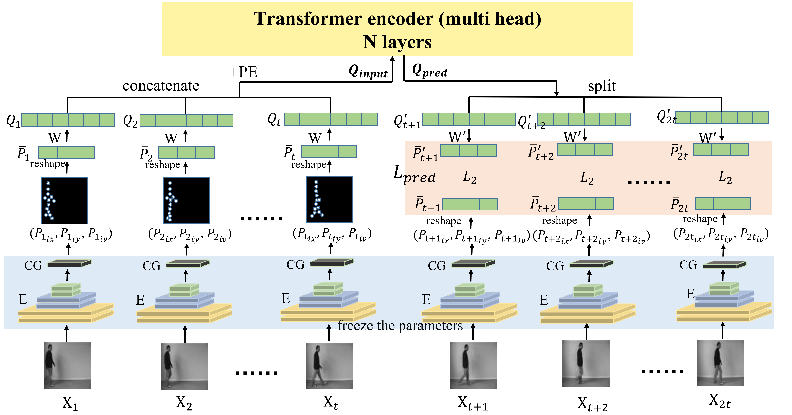
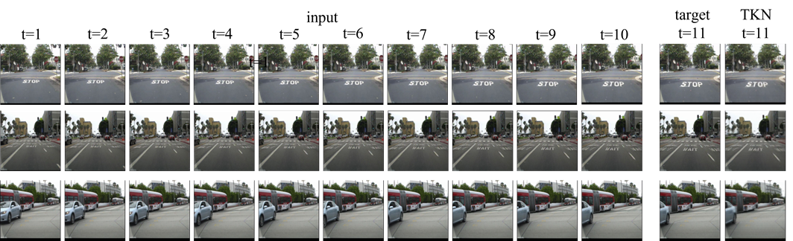
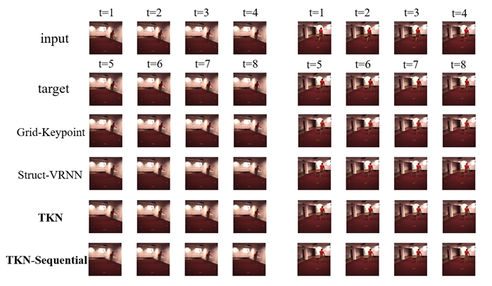
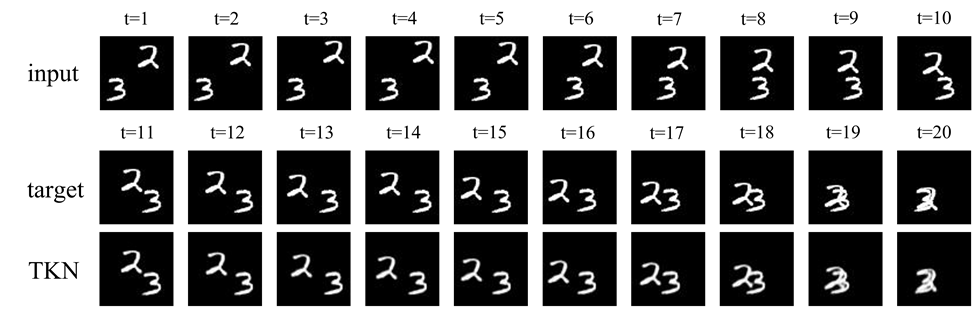
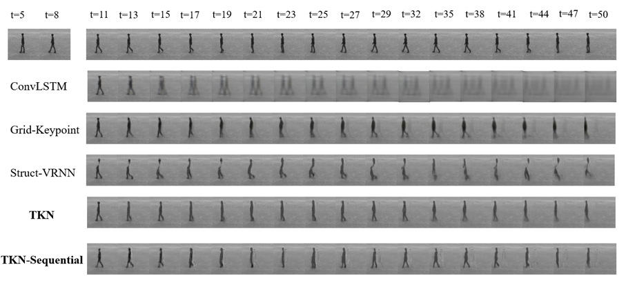

TKN: Transformer-based Keypoint Prediction Network for Real-time Video Prediction
Haoran Li1, Xiaolu Li1, Pengyuan Zhou2 Yong Liao1*,
1 University of Science and Technology of China 2 Aarhus University
Abstract
Video prediction is a complex time-series forecasting task with great potential in many use cases. However, traditional methods prioritize accuracy and overlook slow prediction speeds due to complex model structures, redundant information, and excessive GPU memory consumption. These methods often predict frames sequentially, making acceleration difficult and limiting their applicability in real-time scenarios like danger prediction and warning.Therefore, we propose a transformer-based keypoint prediction neural network (TKN). TKN extracts dynamic content from video frames in an unsupervised manner, reducing redundant feature computation. And, TKN uses an acceleration matrix to reduce the computational cost of attention and employs a parallel computing structure for prediction acceleration. To the best of our knowledge, TKN is the first real-time video prediction solution that achieves a prediction rate of 1,176 fps, significantly reducing computation costs while maintaining other performance. Qualitative and quantitative experiments on multiple datasets have demonstrated the superiority of our method, suggesting that TKN has great application potential.
Approach

The overview of TKN. Two main modules are the Keypoint Detector and the Predictor marked with the blue and yellow undertones. The predicted frame uses the background information extracted from the last frame of the input. Both the inputting stage and prediction stage allow batch processing (e.g., input multiple frames simultaneously) and thus enable temporal parallelism. Note that the ground truth keypoints information, Preal = ( Pt+1, …, P2t ), is output by Xt+1, …, X2t using the keypoint detector (excluded from the figure for simplicity). Lpred loss is marked with the red undertones.
Result

Dataset Caltech Pedestrian (10 → 1)

Dataset Human36 (4 → 4)

Dataset Moving Mnist (10 → 10)

Dataset KTH (10 → 40)
Citation
@article{li2023tkn,
title={TKN: Transformer-based Keypoint Prediction Network For Real-time Video Prediction},
author={Li, Haoran and Zhou, Pengyuan and Lin, Yihang and Hao, Yanbin and Xie, Haiyong and Liao, Yong},
journal={arXiv preprint arXiv:2303.09807},
year={2023}
}{kind=link}